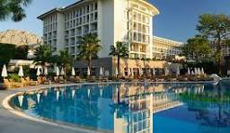

Grand Palace Hotel provides luxury rooms,
excellent service, and beautiful views.

Room Types
Deluxe Room
Executive Room
Suite Room
Room Facilities
Free WiFi
Air Conditioner
24/7 Room Service
Swimming Pool Access
Hotel Video Tour
Hotel Overview
Grand Palace Hotel is a luxury hotel located in the heart of the city.
It is known for its modern architecture and excellent hospitality services.
The hotel was established in 2005 and has become one of the most popular
destinations for both business travelers and tourists.
Grand Palace Hotel offers a wide range of facilities including
deluxe rooms, conference halls, a multi-cuisine restaurant,
and a fitness center The hotel also provides
24-hour room service, free Wi-Fi, and airport transportation
for the convenience of guests.
Due to its central location, visitors can easily access nearby
shopping centers, tourist attractions, and entertainment areas.
Grand Palace Hotel is widely recognized for maintaining
high standards of comfort, cleanliness, and
customer satisfaction.